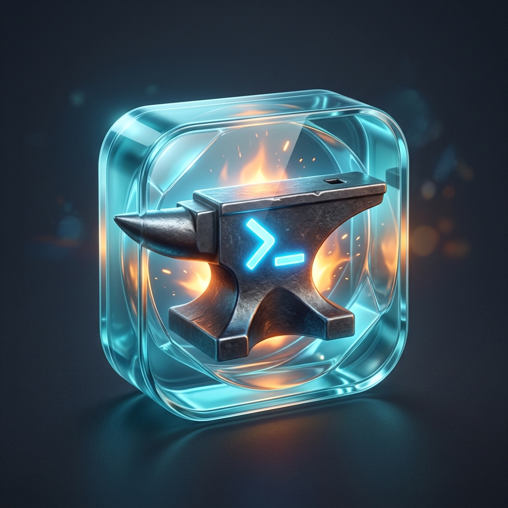
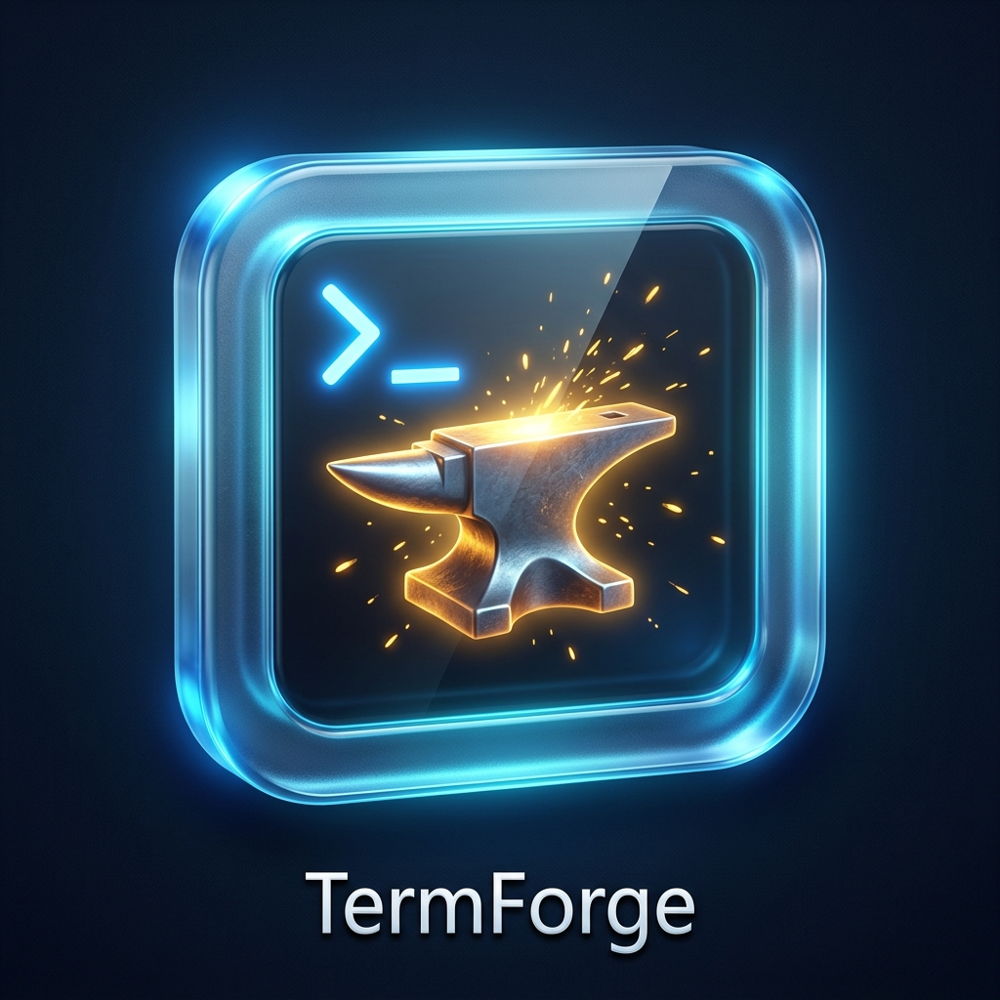
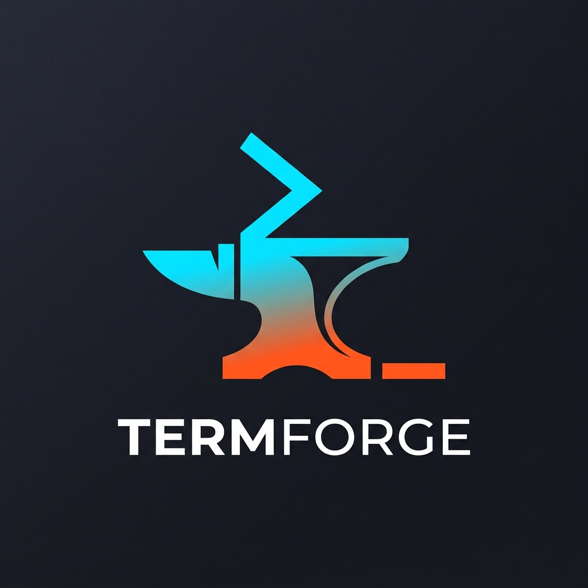
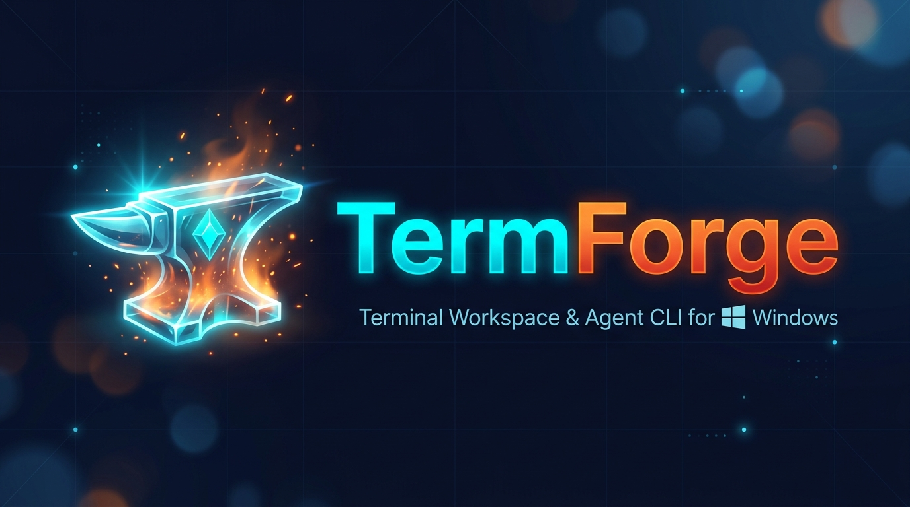
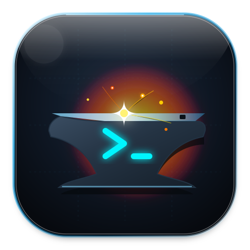
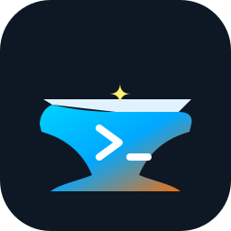
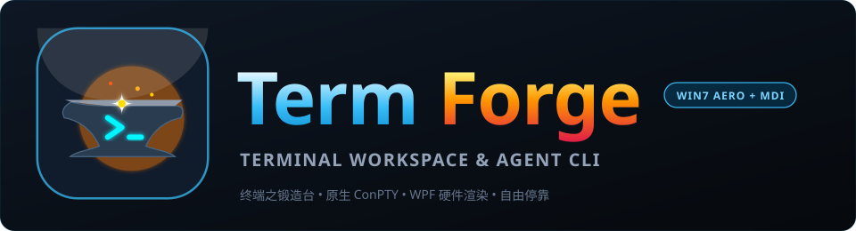

终端之锻造台 (The Terminal Workspace & Agent CLI for Windows) 官方专属 LOGO 方案。
融合 Windows 7 Aero Glass 毛玻璃拟物经典、铁砧与锻造烈火 (Forge & Sparks) 以及 极客终端字符提示符 (>_)。
覆盖桌面应用图标、任务栏小标、极简矢量徽标与官方品牌横幅
Windows 7 Aero 圆角毛玻璃胶囊 + 炽热熔光铁砧 + 荧光 >_ 提示符

设计寓意： 外层采用 Windows 7 黄金时代晶莹通透的天青色 Aero Glass 玻璃外壳，顶部带有细腻的 45° 高光折射；内部则是一座坚固沉稳的重工业铁砧，其上闪烁着流光溢彩的终端输入提示符，背景则是炽热的金色熔炉火焰与飞溅星火，寓意“在 Windows 终端中锻造无限可能”。
最佳场景： 桌面快捷方式图标 (256x256 / 48x48)、启动屏幕 (Splash Screen)、安装包封面。
经典毛玻璃终端视窗 + 锻造金砧 + 顶部 >_ 发光字符

设计寓意： 直接将 Windows 经典 MMC / 终端子窗口拟物化为发光玻璃边框，内部为沉浸式深墨色控制台视口。左上方常驻天蓝色的终端光标，中央由铁砧激起璀璨金色星花，完美呼应了本项目 MMC MDI 多文档工作台的技术灵魂。
最佳场景： MDI 标题栏小图标、任务栏切换预览、系统托盘右键菜单标识。
硬核几何线条 + 渐变撞色 + 极小尺寸极致清晰度

设计寓意： 剔除多余细节，将重锤敲击的闪电火花演化为顶部的折线指令流，主体为电光青蓝到熔岩炽橙的双色渐变铁砧。在大尺寸下极具现代科技感，在 16x16 / 32x32 微型像素下依然轮廓分明、一眼辨识。
最佳场景： 网页 Favicon、Git 徽标 Badge、开发者文档左上角导航 Logo、单色印刷与贴纸。
Aero 水晶发光铁砧 + 双色品牌字标 + Windows 副标题

设计寓意： 适用于官方展示的标准排版。左侧由发光透亮的水晶 Aero 铁砧承托能量，右侧采用粗体 Segoe UI 无衬线排版，“Term”呈现电光天蓝，“Forge”呈现炽烈暖橙，下方缀以 Windows 官方风格标语，尽显工程旗舰气质。
最佳场景： GitHub README.md 顶部大横幅 (Hero Image)、官网主页、技术演示 PPT 封面。
基于纯数学矢量几何与滤镜编写，零失真无损缩放，支持直接嵌入 WPF 与 Web



验证 LOGO 在 Windows 7 经典任务栏与 MDI 多文档标题栏中的视觉融合度
严格遵守文档《UI-Win7-Aero-Design.md》规范体系的官方色彩规范
如何在本项目 WPF 主程序与文档中快速引入该 LOGO 资源
<p align="center">
<img src="docs/design/images/termforge_brand_banner.jpg" width="700" alt="TermForge Banner" />
</p><Window x:Class="AgentTerminal.App.MainWindow"
...
Icon="Assets/termforge_app_icon_aero.jpg"
Title="TermForge">